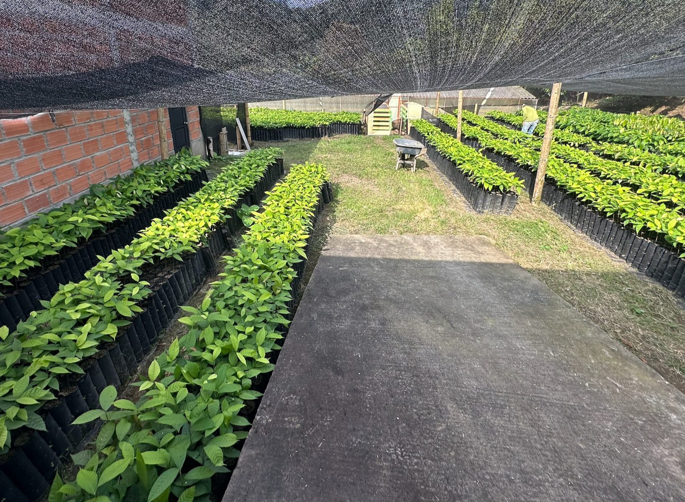

Small Farmers

Local Cocoa Farms
During our trip, we visited a local farm in Belalcázar, where farmers are part of a cocoa farming community with over 120 members. They collaborate to develop new techniques and adopt innovative technologies to enhance harvest yields.
Regulating Productivity
Farmers use a university-provided weather station to monitor environmental factors affecting cocoa pods. They also operate fermentation facilities and processing machines for efficient cocoa handling.